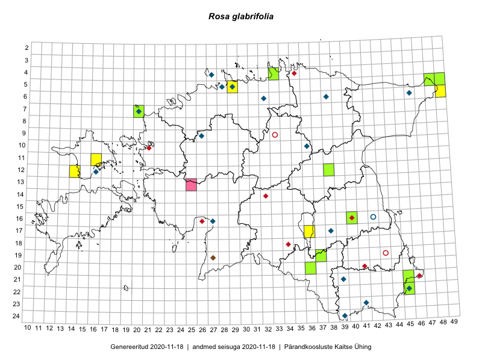

Rosa glabrifolia
Uuendatud: 2016-12-07
Kaardile koondatud taksonid: Rosa glabrifolia C.A.Mey. ex Rupr.

Kaart põhineb 7 kirjel, neist vaatlusi 5 ja eksemplare 2. Taksonit on leitud 7 ruudust.
| Ruut | Vaatleja(d) | Vaatlusaeg | Kirje tüüp | Viide andmebaasikirjele |
|---|---|---|---|---|
| 11-16 | Eeva-Maria Jeletsky, Tarmo Niitla | 2015-06-20 | ruut/ala | vaata PlutoFis |
| 12-14 | Eeva-Maria Jeletsky, Tarmo Niitla | 2015-06-25 | ruut/ala | vaata PlutoFis |
| 19-37 | Eeva-Maria Jeletsky, Tarmo Niitla | 2015-08-10 | ruut/ala | vaata PlutoFis |
| 17-36 | Helle Mäemets, Mare Leis | 2015-06-25 | ruut/ala | vaata PlutoFis |
| 06-49 | Toomas Kukk | 2016-07-23 | ruut/ala | vaata PlutoFis |
| 16-40 | Thea Kull | 2015-07-30 | eksemplar | vaata PlutoFis |
| 20-36 | Peedu Saar, Tarmo Niitla | 2016-06-14 | eksemplar | vaata PlutoFis |